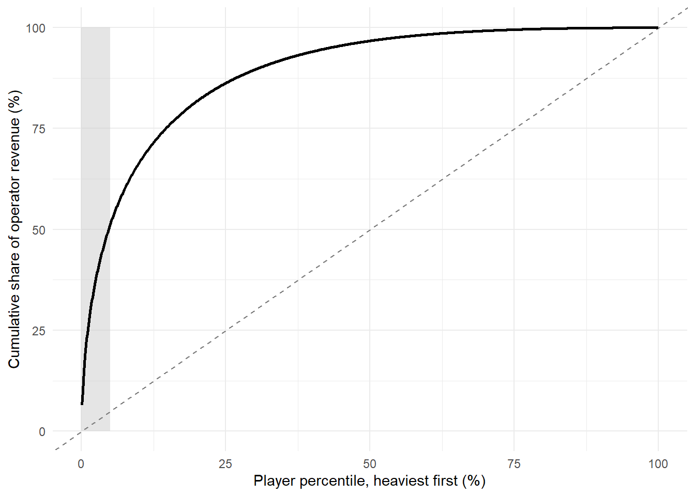

flowchart TB P["Murphy v. NCAA (2018)<br/>PASPA struck down"] --> R["Retail sportsbook<br/>legalization (staggered)"] P --> O["Online / mobile<br/>legalization (staggered)"] R --> N["Little detectable change<br/>on most outcomes"] O --> W["Well-being<br/>(hotline calls, suicide)"] O --> F["Household finance<br/>(credit score, bankruptcy)"] O --> S["Savings and portfolios<br/>(brokerage deposits)"] O --> H["Health behaviors<br/>(substance use)"] W --> C["Convergent finding:<br/>the channel is the treatment"] F --> C S --> C H --> C
24 Gambling, Sports Betting, and Prediction Markets
The previous chapter treated games as products whose engagement mechanics can be engineered, and closed on loot boxes—the point at which a reward schedule starts to look like a wager. This chapter crosses that line deliberately. Gambling is a consumer market with a marketing mix like any other: a price (the odds), a product line (bet types), a promotion calendar (free bets and deposit matches), an advertising budget, and a customer-relationship function that is unusually good at identifying and retaining its heaviest users. It is also a market in which the product is designed to be consumed past the point the consumer intended, which makes it the sharpest available test of whether the field’s constructs and methods can speak to consumer welfare rather than only to firm performance.
Marketing has studied gambling for decades, but sporadically, and the literature sat in an awkward place: interesting behavior, weak identification. That changed in 2018. When the U.S. Supreme Court struck down the Professional and Amateur Sports Protection Act in Murphy v. NCAA, it handed researchers a staggered, state-level, two-channel policy experiment of a kind the field rarely gets, and the papers built on it began landing in the top journals in 2026. This chapter is organized around that experiment, works outward to the marketing machinery that operates inside it, and ends with prediction markets—the same instrument turned to a different purpose, and the place where a wager becomes a forecast.
Learning objectives. By the end of this chapter you should be able to (i) describe the PASPA rollout as a research design and say precisely what its two treatments identify, (ii) summarize what the three flagship studies found and why their agreement matters more than any one of them, (iii) connect the operator’s customer-base economics to the harm literature and quantify the tension between them, and (iv) distinguish a prediction market from a sportsbook on grounds other than regulatory labeling.
24.1 The PASPA Rollout as a Research Design
Before May 2018, only Nevada offered legal single-game sports betting. Murphy returned the decision to the states, and within a month Delaware and New Jersey had launched retail sportsbooks; by 2025, 39 states and the District of Columbia had legalized some form of sports betting, and roughly $300 billion had been wagered through the newly legal markets between 2018 and 2023 (Hollenbeck, Larsen, and Proserpio 2026).
What makes this more than a large market is its internal structure. Three features do the identifying work, and a study that ignores any of them will mismeasure the effect.
Staggered timing. States legalized at different dates for reasons largely unrelated to the outcomes researchers care about—budget cycles, legislative calendars, tribal-compact negotiations. That supports a difference-in-differences design with not-yet-treated states as controls, which is why every paper in this literature reaches for the staggered estimators of Section 43.1.6 rather than a two-way fixed-effects specification.
Two distinct treatments. Retail sportsbooks and online or mobile betting are separate legalization events, and many states adopted them at different times. This is the crucial design feature. “Sports betting became legal” is a confounded treatment; channel is the variable that actually moves the cost of placing a bet from a drive to a thumb-tap. A design that pools them estimates a weighted average of two effects that turn out to be very different sizes.
A pre-period with real gambling in it. Roughly 75–80% of Americans reported some gambling in a year before 2018, with about 10% gambling twice weekly or more (Hollenbeck, Larsen, and Proserpio 2026). The counterfactual is not abstinence; it is lotteries, casinos, and offshore books. Any welfare claim has to net out substitution from those channels, which is a spillover problem of exactly the shape Chapter 70 formalizes.
24.2 What Legalization Did
Four teams, working with four unrelated data sources, have now estimated the consequences of this rollout. Their agreement is the substantive headline, and their disagreement about magnitudes is a useful lesson in what different outcome measures can see.
24.2.1 Well-being: help-seeking and mortality
Ozer, Greenwood, and Gopal (2026) ask whether legalization shows up in the two outcomes the clinical literature has long associated with problem gambling: help-seeking and suicide. They assemble state-level counts of calls to the National Problem Gambling Hotline alongside state suicide counts, and exploit the combination of legalization states occupy—online only, retail only, both, or neither.
The channel result is stark. Hotline calls are essentially uncorrelated with the legalization of physical sportsbooks, and strongly correlated with the legalization of online betting, where calls rise by roughly 22.8%. The authors further report that online legalization is associated with an increase in suicides, with effects concentrated among young, unmarried, and relatively less educated men. (The published article is paywalled; the magnitudes here come from its abstract and the authors’ university news release, and the suicide result in particular should be read as the correlational statement the authors make it.)
Two things are worth saying about the outcome measures. Hotline calls are a help-seeking measure, not a prevalence measure, and help-seeking responds to salience: a state that legalizes online betting also floods itself with advertising that carries a helpline number, which mechanically raises calls. That is a real confound and it cuts toward overstatement. Against it, the retail-versus-online contrast is doing exactly the work a placebo should—retail legalization also comes with advertising, and calls do not move.
24.2.2 Household finance: credit and insolvency
Hollenbeck, Larsen, and Proserpio (2026) ask the same question of a financial outcome that is measured continuously, for nearly everyone, without any self-report. They use the University of California Consumer Credit Panel, a nationally representative 2% sample of U.S. adults with a credit file, and after restricting to non-movers with active accounts, work with roughly 4.4 million individuals and about 90 million quarterly observations from March 2016 to June 2023. Treatment effects are estimated with the Callaway and Sant’Anna (2021) estimator, again with two definitions—any legal access, and online access specifically.
The pattern repeats. Average credit scores fall by roughly 0.8 points in states with any legal sports betting, and by about 2.75 points—roughly three times as much—where online betting is available. Online access raises the likelihood of bankruptcy by about 10% and debt sent to collections by about 8%, with effects emerging roughly two years after legalization. Crucially, the damage is not spread evenly: it is “overwhelmingly concentrated among the subprime category,” people who were already financially precarious before legal betting arrived. (These figures are from the authors’ open April 2025 working paper; the published version may differ.)
A 2.75-point average credit score decline sounds trivial, and read as an average it is. That is the point. A small average over a large population that is concentrated in a vulnerable tail is exactly the distributional structure Section 10.8 warned about in a different context: the mean is the wrong summary statistic when the mechanism operates on a subpopulation.
24.2.3 Savings: what the money stopped doing
Baker et al. (2026) ask where the wagered money came from, using household transaction data rather than credit files. Their answer reframes the whole debate. Legalization did not primarily crowd out other gambling or general consumption. It crowded out saving: net investment into brokerage accounts falls by about 20% following legalization, the heaviest bettors cut their investment deposits by more than half, and roughly 20 cents of every dollar sent to a betting app comes out of money that would otherwise have been invested. Households with above-median savings barely change their investing; low-savings households cut deposits substantially.
This is the most economically consequential of the three findings and the least intuitive. The harm is not only that some people lose money betting—that is the product working as designed—but that the losses are financed disproportionately out of long-horizon savings by precisely the households with the least of it. The welfare cost therefore compounds at the market rate of return over a working life, which no single-period accounting of gambling losses will capture.
24.2.4 Health behaviors
Dasgupta and Ghimire (2026) extend the outcome set to substance use, finding early evidence that sports betting laws move it as well. Read alongside Wang and Gong (2025) on aggression, the emerging picture is that the effects are not confined to the household balance sheet.
24.2.5 Why the convergence is the argument
Any one of these studies is contestable. Hotline calls confound help-seeking with prevalence. Credit scores are coarse and slow. Transaction panels cover a self-selected set of account-linkers. What is hard to explain away is that four teams using four unrelated measurement systems—a public-health hotline, a credit bureau, a household transaction aggregator, and health surveys—all find the same channel asymmetry: retail legalization does little, online legalization does a lot. Rival explanations have to account for the pattern in all four, and the obvious ones do not. This is triangulation in the sense of Chapter 73, and it is the strongest form of argument available when no single design is decisive.
Balance requires noting the dissent. Walker and Evans (2026) argue that a good deal of sports-betting research is methodologically weak in ways that lead to bad regulation, and the critique deserves engagement rather than dismissal: several widely cited findings in this area rest on aggregate correlations, on outcome measures that confound salience with incidence, or on treatment definitions that pool channels. The three studies above are largely not the target—they are the ones that got the design right—but a doctoral reader entering this literature should expect the median paper in it to be considerably weaker than the modal paper they will hear cited.
24.3 Why the Channel Is the Treatment
The consistent retail-versus-online asymmetry demands a mechanism, and the marketing literature already supplies most of it. Moving a sportsbook from a building to a phone changes at least five things at once.
Friction. A retail bet requires a trip. An online bet requires a thumb. Every result in Chapter 19 about the power of default and friction predicts that this single change dominates the others.
Continuous availability. A casino visit is an episode with a beginning and an end. A phone is available during the game, at work, and at 2 a.m., which converts a discrete purchase occasion into a continuous one.
In-play betting. The most consequential product innovation is the ability to bet on the next play rather than the final score, which compresses the wager-outcome cycle from hours to seconds. The reward-schedule machinery of Chapter 23 applies directly: a variable-ratio schedule with a short inter-trial interval is the most reinforcement-dense arrangement known, and in-play betting is precisely that.
Push notification. The operator can initiate the purchase occasion. No retail sportsbook can text a lapsed customer an offer during halftime.
Instant, frictionless funding. Linked bank accounts and card deposits remove the cash constraint that a physical venue imposes, which is the most plausible proximate explanation for the Baker et al. (2026) savings result.
Ma, Kim, and Kim (2014) had established well before legalization that online gambling behavior responds to cumulative and recent outcomes and to prior use—that is, that the channel supports precisely the outcome-contingent escalation the harm literature worries about—and Cotte and Latour (2009) had shown ethnographically that online and casino gambling are experientially different activities rather than the same activity in two locations. The 2026 causal literature can be read as the population-scale confirmation of what those two papers described.
24.4 The Marketing Machinery
Gambling is a marketing problem in a strict sense: every element of the mix is a deliberate design choice, and the choices are unusually legible.
24.4.1 Odds are a price
The operator’s margin—the hold or vig—is embedded in the odds as a deviation from fair pricing, which makes betting markets a natural laboratory for price-response research where the true value is eventually revealed. The oldest finding in that laboratory is the favorite-longshot bias: longshots are systematically overpriced relative to their win probability and favorites underpriced. Thaler and Ziemba (1988) put it on the anomalies map, and Ottaviani and Sørensen (2010) show it can arise from noisy information and rational inference rather than from a taste for skewness, which matters because the two explanations imply different remedies. For a marketing reader the useful reframing is that the bias is a price discrimination result: the operator earns a higher margin on the bets that the least informed customers prefer.
24.4.2 Promotions manufacture a purchase occasion
Free bets, deposit matches, and odds boosts are the industry’s dominant acquisition instrument, and they are structurally identical to the promotional lotteries Dhar, González-Vallejo, and Soman (1995) analyzed: an uncertain reward whose expected value consumers systematically misjudge. Rossi et al. (2021) document the resulting advertising volume and content on social media, and find substantial regulatory non-compliance—a finding that belongs to the public-policy tradition of Chapter 74 and supplies exactly the kind of “instrument became cheaper on a date” shock that chapter’s template asks for.
24.4.3 The customer base is the policy problem
The sharpest connection to the rest of this book runs through customer-base analysis. Lam and Mizerski (2009) show that gambling purchases follow the NBD and NBD–Dirichlet processes that Chapter 16 develops for packaged goods, and Narayanan and Manchanda (2011) estimate individual-level casino gambling behavior with the heterogeneity machinery of Chapter 15. Those two facts together have an uncomfortable implication that neither the harm literature nor the CLV literature usually states.
A gamma-mixed Poisson purchase process is heavy-tailed. Under it, a small fraction of customers accounts for a large fraction of transactions—the standard result the CLV chapters treat as a targeting opportunity. In gambling, that same tail is the set of customers a clinical framework would classify as at risk. The operator’s revenue concentration and the regulator’s harm concentration are therefore not two facts but one fact, and any responsible-gambling instrument that binds on the tail is a direct tax on the revenue base. The simulation below makes the exchange rate explicit.
Code
suppressPackageStartupMessages({library(ggplot2)})
set.seed(2018)
# A synthetic bettor population whose annual bet counts follow an NBD
# (gamma-mixed Poisson), the process Lam & Mizerski (2009) fit to gambling
# purchases. Stakes are lognormal and independent of frequency.
n <- 50000
lambda <- rgamma(n, shape = 0.40, rate = 0.10) # latent monthly bet propensity
bets <- rpois(n, lambda * 12) # annual bets
stake <- rlnorm(n, meanlog = 3.0, sdlog = 1.2) # typical stake per bet ($)
handle <- bets * stake # total amount wagered
hold <- 0.075 # operator margin on handle
rev <- hold * handle # expected operator revenue = player loss
active <- rev[rev > 0]
sorted <- sort(active, decreasing = TRUE)
share_top <- function(p) sum(sorted[1:ceiling(p * length(sorted))]) / sum(sorted)
cat("Active bettors: ", length(active), "of", n, "\n")
#> Active bettors: 42512 of 50000
cat("Median annual loss: $", round(median(active)), "\n")
#> Median annual loss: $ 35
cat("Mean annual loss: $", round(mean(active)), "\n")
#> Mean annual loss: $ 174
cat("Revenue share, top 1% : ", round(100 * share_top(0.01), 1), "%\n")
#> Revenue share, top 1% : 24.1 %
cat("Revenue share, top 5% : ", round(100 * share_top(0.05), 1), "%\n")
#> Revenue share, top 5% : 51.3 %
cat("Revenue share, top 10% : ", round(100 * share_top(0.10), 1), "%\n")
#> Revenue share, top 10% : 66.5 %
# A responsible-gambling instrument: cap each player's annual net loss at L.
# Revenue retained is sum(min(rev_i, L)); players affected are those above L.
# Caps are set at quantiles of the realized loss distribution so that the
# incidence comparison does not depend on the calibration above.
qs <- c(0.90, 0.95, 0.99, 0.995, 0.999)
caps <- as.numeric(quantile(active, qs))
inc <- data.frame(
cap_pctile = 100 * qs,
cap_usd = round(caps),
affected = sapply(caps, function(L) 100 * mean(active > L)),
retained = sapply(caps, function(L) 100 * sum(pmin(active, L)) / sum(active))
)
inc$forgone_per_pp <- with(inc, (100 - retained) / affected)
print(inc, row.names = FALSE, digits = 3)
#> cap_pctile cap_usd affected retained forgone_per_pp
#> 90.0 392 10.002 56.1 4.39
#> 95.0 736 5.001 69.9 6.02
#> 99.0 2153 1.002 88.3 11.63
#> 99.5 3173 0.501 92.5 15.07
#> 99.9 7064 0.101 97.6 23.55The numbers state the tension quantitatively, and the asymmetry is severe. The heaviest 1% of active bettors supply roughly a quarter of revenue and the heaviest 5% supply about half. Consequently a loss cap set at the 99th percentile of the loss distribution—binding on one player in a hundred—costs the operator close to 12% of revenue, and a cap at the 95th percentile, binding on one player in twenty, costs about 30%. The final column is the incidence of the policy: forgone revenue per percentage point of players affected, which rises monotonically as the cap tightens onto the tail, from about 4 at the 90th percentile to about 24 at the 99.9th.
That column is the number a welfare analysis in the sense of Chapter 72 needs, and it is almost never computed on a common footing. Industry submissions to consultations report revenue at risk; public-health submissions report players protected. They are the numerator and denominator of the same ratio, and quoting either alone is a rhetorical choice rather than an analytical one. Note also what the exercise does not settle: it prices the policy, it does not evaluate it. Whether trading 30% of revenue for protection of the heaviest 5% is worthwhile depends on how much of that tail’s spending is harm rather than willingly-purchased entertainment—which is a measurement question the field has not answered and the agenda in Section 24.7 returns to.
Code
q <- seq(0.001, 1, by = 0.001)
cum <- sapply(q, function(p) sum(sorted[1:ceiling(p * length(sorted))]) / sum(sorted))
df <- data.frame(pct = 100 * q, cum = 100 * cum)
ggplot(df, aes(pct, cum)) +
annotate("rect", xmin = 0, xmax = 5, ymin = 0, ymax = 100,
fill = "grey80", alpha = 0.5) +
geom_abline(intercept = 0, slope = 1, linetype = "dashed", colour = "grey50") +
geom_line(linewidth = 0.9) +
labs(x = "Player percentile, heaviest first (%)",
y = "Cumulative share of operator revenue (%)") +
theme_minimal(base_size = 11)
The mechanism is worth stating plainly because it generalizes past gambling. Whenever a firm’s revenue follows a heavy-tailed consumption process and excess consumption of the product is itself the harm, customer-base concentration and harm concentration coincide by construction. That is true of gambling, and it is at least arguably true of free-to-play games (Chapter 23), short-form video, and alcohol. The CLV machinery is neutral about this; it identifies the tail either way. What changes is what the firm is supposed to do having found it.
24.5 The Consumer Behavior of Betting
The behavioral literature explains why the demand curve for this product has such a strange shape.
Why people gamble at all is not obvious under expected utility, since the expected return is negative by construction. Barberis (2012) gives the most useful modern answer: under cumulative prospect theory, an agent who overweights the tails of a probability distribution finds a sequence of casino bets attractive ex ante, and—this is the part that matters—will plan to stop at a threshold and then predictably fail to, because the plan is time-inconsistent. The model derives overstaying from the same primitives that derive entry, which is exactly what a good theory of a self-control good should do.
Andrade and Iyer (2009) confirm the prediction experimentally in the field’s own journal: what bettors plan to wager in sequential gambles and what they actually wager diverge systematically, with prior outcomes driving the gap. That divergence is the empirical signature of the normative-departure taxonomy in Chapter 71: the consumer is not merely choosing a risky option, they are failing to execute their own plan, which is the specific condition under which restricting choice can raise welfare.
The mechanisms behind the divergence are well documented. Thaler and Johnson (1990) show that prior gains raise risk-taking (“house money”) while prior losses raise it too when a break-even option is available—two effects that between them cover most of a losing session. Clotfelter and Cook (1993) document the gambler’s fallacy in lottery play, and Sundali, Safford, and Croson (2012) show that near-misses in casino roulette increase subsequent betting, which is the design principle behind every slot reel that stops one symbol short.
Finally, the market exists inside a culture that had to be built. Humphreys (2010) traces how casino gambling was legitimated as a consumption practice, and Mascarenhas (1990)—published thirty-six years ago in JAMS—supplies a formal methodology for the ethical assessment of exactly this kind of marketing phenomenon. That marketing had the tools to evaluate this market before the market existed, and largely did not use them, is worth sitting with.
24.6 Prediction Markets
A prediction market is structurally a betting market whose purpose is to generate a forecast rather than to entertain. The price of a contract paying $1 if an event occurs is read as the market’s probability of that event, and the case for the instrument is that it aggregates dispersed private information with a financial incentive for honesty.
Do they work? Spann and Skiera (2008) run the direct comparison in sports, where outcomes resolve quickly and often, and find prediction markets competitive with betting odds and superior to tipsters. Berg, Neumann, and Rietz (2009) used markets to forecast Google’s market capitalization before its IPO, which is the harder test—a one-shot event with no base rate.
Can they be manipulated? This is the standing objection, and the answer is encouraging with a caveat. Camerer (1998) ran a field experiment placing and cancelling large racetrack bets and found the market largely undisturbed, evidence that manipulation is expensive and self-defeating. Jian and Sami (2012) show theoretically and experimentally that the answer depends on the trading mechanism and on how information is distributed—so manipulability is a property of market design, not of prediction markets in general. Slamka, Skiera, and Spann (2013) take up the design question directly, comparing automated market makers on performance and liquidity, which is the practical problem for any firm running an internal market too thin to clear.
Why marketing should care. Qiu and Kumar (2017) ran a field experiment using a social-media-based prediction market to elicit voluntary knowledge contribution, which points at the applied use: a firm that wants an honest internal forecast of a launch date, a demand level, or a project risk has, in a prediction market, an elicitation mechanism that rewards accuracy rather than optimism. That makes it a preference- and belief-measurement instrument, and it belongs beside the methods of Chapter 40 rather than in a separate literature.
Where the boundary now sits. The regulatory line between a prediction market and a sportsbook has become genuinely unclear, as event-contract platforms list markets on sporting outcomes under financial rather than gaming regulation. The distinction that survives scrutiny is not the asset and not the regulator but the purpose the price serves: a prediction market’s output is consumed by third parties as information, and its social value comes from that externality. A sportsbook’s prices are consumed by the bettor as a product. A venue can be both, and when it is, the informational defense does not automatically transfer to the consumption side. That is an open research question rather than a settled taxonomy, and it is the most promising place in this chapter for a marketing paper.
24.7 A Research Agenda
The causal literature has established the first-order facts. What is missing is mostly marketing.
- Advertising is unmeasured. The three flagship studies identify off legalization, not off exposure. Nobody has estimated the effect of sports-betting advertising itself, despite the fact that this is the field’s core competency and that ad exposure varies within legalized states for reasons unrelated to legalization timing (national broadcast buys, team sponsorships, DMA boundaries).
- Promotions are unmeasured. Free bets and deposit matches are the acquisition instrument. Their effect on subsequent betting intensity—not on acquisition, which the operator knows, but on the durable consumption path—is unestimated in public research, and the promotional-lottery framing of Dhar, González-Vallejo, and Soman (1995) is the natural theoretical starting point.
- The substitution question is open. Baker et al. (2026) establish crowd-out of savings rather than of other gambling. Whether legal betting substitutes for illegal betting—the industry’s central policy claim—remains poorly identified, and it is the quantity that decides whether legalization was welfare-improving on the industry’s own terms.
- Responsible-gambling instruments need incidence estimates. Deposit caps, cooling-off periods, and self-exclusion are evaluated, when at all, on participation. The simulation in Section 24.4.3 shows the missing number is the revenue incidence, and computing it requires operator data that a research partnership could obtain.
- The welfare calculation has not been done properly. A full accounting needs the consumer surplus of the roughly 98% of bettors for whom this is inexpensive entertainment, netted against the concentrated losses of the tail. Every ingredient of Chapter 72 is available; nobody has assembled them, and the resulting bound would be the most useful single number in the policy debate.
Each of these is a five-move paper in the sense of Section 74.3, and the shock, the untargeted market, and the exposure variation are all in place.
24.8 Key Takeaways
- The post-Murphy rollout is a two-treatment staggered design, and the treatment that matters is the channel. Retail legalization moves almost nothing; online legalization moves everything measured so far. A study that pools the two estimates a weighted average of a null and a large effect (Section 24.1).
- The three flagship results are convergent and channel-specific: problem-gambling hotline calls rise about 22.8% with online legalization (Ozer, Greenwood, and Gopal 2026); average credit scores fall about 2.75 points with bankruptcy up roughly 10%, concentrated in the subprime tail (Hollenbeck, Larsen, and Proserpio 2026); and net brokerage investment falls about 20%, with roughly 20 cents of every wagered dollar coming out of savings (Baker et al. 2026). Four independent measurement systems agreeing on the channel asymmetry is the argument (Chapter 73).
- Small averages concentrated in a vulnerable tail are the signature of this literature, and reporting the mean is the characteristic error. The distributional question is the policy question.
- Gambling purchases follow the same NBD/Dirichlet processes the customer-base chapters develop (Lam and Mizerski 2009; Narayanan and Manchanda 2011), which means operator revenue concentration and clinical harm concentration are one fact rather than two. Any binding responsible-gambling instrument is therefore a tax on the revenue base, and its incidence is computable (Section 24.4.3).
- Betting demand is generated by time-inconsistent plans, not merely by risk preference: prospect-theoretic agents enter rationally and overstay predictably (Barberis 2012), and bettors’ planned and actual wagers diverge with prior outcomes (Andrade and Iyer 2009; Thaler and Johnson 1990). That divergence is the specific condition under which choice restriction can raise welfare (Chapter 71).
- Prediction markets are the same instrument aimed at information. They forecast competitively (Spann and Skiera 2008; Berg, Neumann, and Rietz 2009), and their manipulability is a property of market design rather than of the form (Camerer 1998; Jian and Sami 2012; Slamka, Skiera, and Spann 2013). The defensible distinction from a sportsbook is what the price is for, not who regulates it.
- The open work is marketing’s own: advertising and promotion effects are unestimated, substitution from illegal betting is unidentified, and no one has assembled the welfare bound (Section 24.7).
24.9 Further Reading
For the causal literature, read Hollenbeck, Larsen, and Proserpio (2026) first for the cleanest design statement, then Baker et al. (2026) for the substitution result that reframes it, then Ozer, Greenwood, and Gopal (2026) for the outcomes that matter most and are hardest to measure. Walker and Evans (2026) is the necessary corrective on research quality in the wider field. For behavior, Barberis (2012) is the theoretical anchor and Andrade and Iyer (2009) the marketing counterpart. For prediction markets, start with Spann and Skiera (2008) for whether they work and Jian and Sami (2012) for when they break. Eadington (1999) and Thaler and Ziemba (1988) remain the best short introductions to the economics, and Humphreys (2010) to how the market became culturally acceptable in the first place.
Andrade, Eduardo B., and Ganesh Iyer. 2009. “Planned Versus Actual Betting in Sequential Gambles.” Journal of Marketing Research 46: 372–83. https://doi.org/10.1509/jmkr.46.3.372.
Baker, Scott R., Justin Balthrop, Mark J. Johnson, Jason Kotter, and Kevin Pisciotta. 2026. “Gambling Away Stability: Sports Betting’s Impact on Vulnerable Households.” Journal of Financial Economics 183: 104330. https://doi.org/10.1016/j.jfineco.2026.104330.
Barberis, Nicholas. 2012. “A Model of Casino Gambling.” Management Science 58: 35–51. https://doi.org/10.1287/mnsc.1110.1435.
Berg, Joyce E., George R. Neumann, and Thomas A. Rietz. 2009. “Searching for Google’s Value: Using Prediction Markets to Forecast Market Capitalization Prior to an Initial Public Offering.” Management Science 55: 348–61. https://doi.org/10.1287/mnsc.1080.0956.
Callaway, Brantly, and Pedro H. C. Sant’Anna. 2021. “Difference-in-Differences with Multiple Time Periods.” Journal of Econometrics 225 (2): 200–230. https://doi.org/10.1016/j.jeconom.2020.12.001.
Camerer, Colin F. 1998. “Can Asset Markets Be Manipulated? A Field Experiment with Racetrack Betting.” Journal of Political Economy 106: 457–82. https://doi.org/10.1086/250018.
Clotfelter, Charles T., and Philip J. Cook. 1993. “The “Gambler’s Fallacy” in Lottery Play.” Management Science 39: 1521–25. https://doi.org/10.1287/mnsc.39.12.1521.
Cotte, June, and Kathryn A. Latour. 2009. “Blackjack in the Kitchen: Understanding Online Versus Casino Gambling.” Journal of Consumer Research 35: 742–58. https://doi.org/10.1086/592945.
Dasgupta, Kabir, and Keshar Ghimire. 2026. “Gambling and Substance Use: Early Evidence from Sports Betting Laws.” Health Economics 35: 851–65. https://doi.org/10.1002/hec.70088.
Dhar, Sanjay K., Claudia González-Vallejo, and Dilip Soman. 1995. “Brand Promotions as a Lottery.” Marketing Letters 6: 221–33. https://doi.org/10.1007/BF00995113.
Eadington, William R. 1999. “The Economics of Casino Gambling.” Journal of Economic Perspectives 13: 173–92. https://doi.org/10.1257/jep.13.3.173.
Hollenbeck, Brett, Poet Larsen, and Davide Proserpio. 2026. “The Financial Consequences of Legalized Sports Gambling.” Management Science. https://doi.org/10.1287/mnsc.2025.02515.
Humphreys, Ashlee. 2010. “Semiotic Structure and the Legitimation of Consumption Practices: The Case of Casino Gambling.” Journal of Consumer Research 37 (3): 490–510. https://doi.org/10.1086/652464.
Jian, Lian, and Rahul Sami. 2012. “Aggregation and Manipulation in Prediction Markets: Effects of Trading Mechanism and Information Distribution.” Management Science 58: 123–40. https://doi.org/10.1287/mnsc.1110.1404.
Lam, Desmond, and Richard Mizerski. 2009. “An Investigation into Gambling Purchases Using the NBD and NBD–Dirichlet Models.” Marketing Letters 20: 263–76. https://doi.org/10.1007/s11002-009-9073-6.
Ma, Xiao, Seung Hyun Kim, and Sung S. Kim. 2014. “Online Gambling Behavior: The Impacts of Cumulative Outcomes, Recent Outcomes, and Prior Use.” Information Systems Research 25: 511–27. https://doi.org/10.1287/isre.2014.0517.
Mascarenhas, Oswald A. J. 1990. “An Empirical Methodology for the Ethical Assessment of Marketing Phenomena Such as Casino Gambling.” Journal of the Academy of Marketing Science 18: 209–20. https://doi.org/10.1177/009207039001800303.
Narayanan, Sridhar, and Puneet Manchanda. 2011. “An Empirical Analysis of Individual Level Casino Gambling Behavior.” Quantitative Marketing and Economics 10: 27–62. https://doi.org/10.1007/s11129-011-9110-7.
Ottaviani, Marco, and Peter Norman Sørensen. 2010. “Noise, Information, and the Favorite-Longshot Bias in Parimutuel Predictions.” American Economic Journal: Microeconomics 2: 58–85. https://doi.org/10.1257/mic.2.1.58.
Ozer, Gorkem Turgut, Brad N. Greenwood, and Anandasivam Gopal. 2026. “Let It Ride! An Empirical Investigation of Problem Gambling and the Implications of Legalized Online Sports Betting.” Information Systems Research. https://doi.org/10.1287/isre.2024.1526.
Qiu, Liangfei, and Subodha Kumar. 2017. “Understanding Voluntary Knowledge Provision and Content Contribution Through a Social-Media-Based Prediction Market: A Field Experiment.” Information Systems Research 28: 529–46. https://doi.org/10.1287/isre.2016.0679.
Rossi, Raffaello, Agnes Nairn, Josh Smith, and Christopher Inskip. 2021. ““Get a £10 Free Bet Every Week!”—Gambling Advertising on Twitter: Volume, Content, Followers, Engagement, and Regulatory Compliance.” Journal of Public Policy & Marketing 40: 487–504. https://doi.org/10.1177/0743915621999674.
Slamka, Christian, Bernd Skiera, and Martin Spann. 2013. “Prediction Market Performance and Market Liquidity: A Comparison of Automated Market Makers.” IEEE Transactions on Engineering Management 60: 169–85. https://doi.org/10.1109/TEM.2012.2191618.
Spann, Martin, and Bernd Skiera. 2008. “Sports Forecasting: A Comparison of the Forecast Accuracy of Prediction Markets, Betting Odds and Tipsters.” Journal of Forecasting 28: 55–72. https://doi.org/10.1002/for.1091.
Sundali, James A., Amanda H. Safford, and Rachel Croson. 2012. “The Impact of Near-Miss Events on Betting Behavior: An Examination of Casino Rapid Roulette Play.” Judgment and Decision Making 7: 768–78. https://doi.org/10.1017/S1930297500003326.
Thaler, Richard H., and Eric J. Johnson. 1990. “Gambling with the House Money and Trying to Break Even: The Effects of Prior Outcomes on Risky Choice.” Management Science 36: 643–60. https://doi.org/10.1287/mnsc.36.6.643.
Thaler, Richard H., and William T. Ziemba. 1988. “Anomalies: Parimutuel Betting Markets: Racetracks and Lotteries.” Journal of Economic Perspectives 2: 161–74. https://doi.org/10.1257/jep.2.2.161.
Walker, Douglas M., and Brent A. Evans. 2026. “How Bad Sports Betting Research Can Lead to Bad Sports Betting Regulations.” The Journal of Gambling Business and Economics 19: 29–56. https://doi.org/10.5750/jgbe.v19i1.2645.
Wang, Wenche, and Hua Gong. 2025. “The Impact of Legalized Sports Betting on Aggression.” Journal of Sports Economics 27: 116–46. https://doi.org/10.1177/15270025251396530.